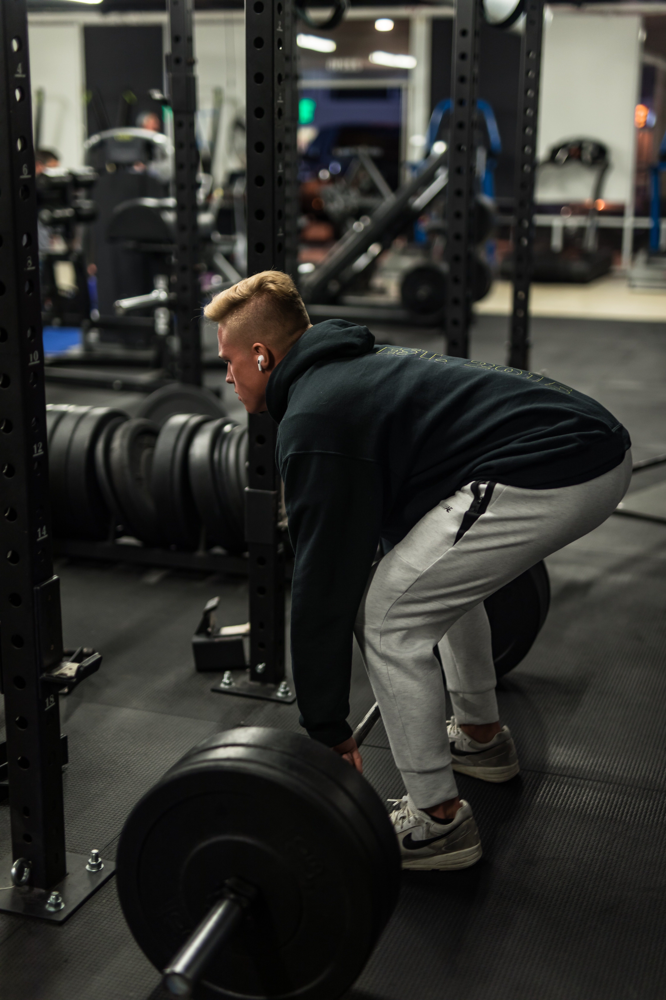

There are three exercises, squat, bench press, and deadlift. 이 3가지 운동은 이다. 프리웨이트 운동은 웨이트에서 가장 핵심적인 운동 이다.
스쿼트는 준비자세는 바벨을 승모근얹는다 그리고 한발 두발 세발로 발위치를 잡는다 이때 발의 위치는 어깨넓이로한다 내려가기전에 허리가 굽어지지않게 하며 또 휘어지지 않게 한다 척추를 중립상태를 이루고 고관절부터 접는다 내려가는동시에 무릎도 접는다 발의 중심은 발의 뒤꿈치로 향하게하며 엉덩이는 수직으로 내려간다 내려가기전엔 발살발 호흡법을 사용하여 숨을 들이마쉰뒤 복부를 단단하게 해주고 내려간다 이때 주의 할점은 바의 위치는 발의 중심부에 위치 하여야한다 발의 중심부를 넘어간다면 무게가 몸의 중심에 있지 않기 때문에 허리와 관절의 데미지를 입을 것이다. 올라올떄에는 코어를 잡으며 허벅지 끝쪽과 엉덩이로 올라온다는 느낌으로 올라오며 마지막 타이밍에서는 무릎과 고관절을 동시에 펴준다.